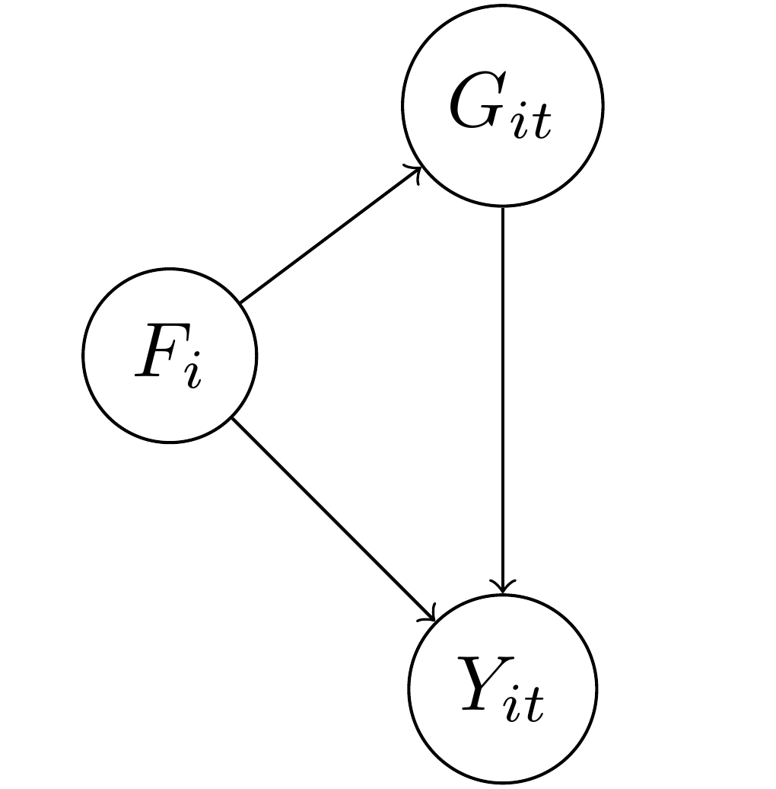
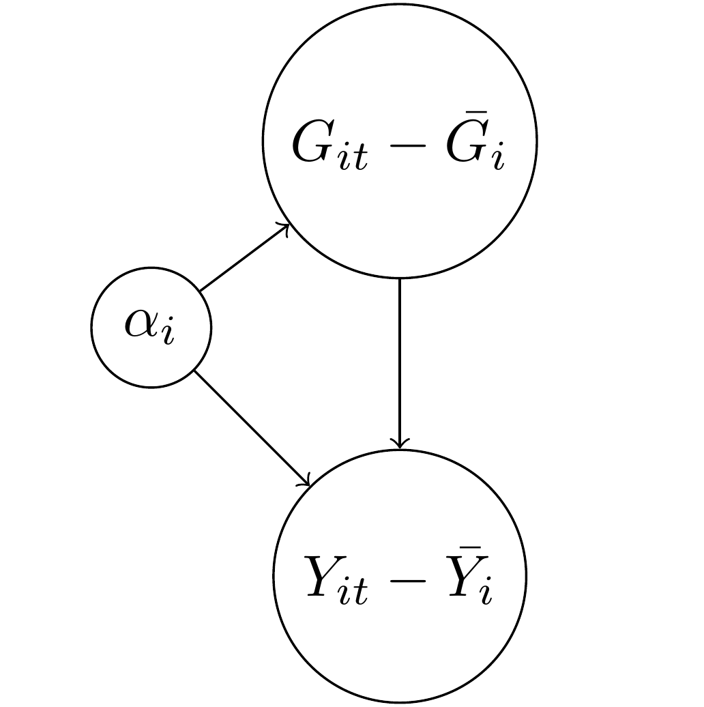

NB: An earlier version of this post critiqued Victor Chernozhukov’s approach to directed a-cyclic graphs and fixed effects, but made some critical errors in interpreting his approach. These errors were entirely mine, and I apologize to Victor for doing so.
With the explosion of work in the causal analysis of panel data, we have an ever-increasing array of estimators and techniques for working with this form of observational data. Yiqing Xu’s new review article, available here, provides a remarkably lucid approach to understanding these new approaches. In this blog post I focus on some areas that I think are unclear in current panel data analysis in a causal perspective, especially fixed effects and the dimensions of variance in panel data. People familiar with my prior work will probably not be surprised at this; I believe that understanding these dimensions is critical to correct inference with panel data.
For those reading this post from disciplines outside the social sciences, or who are unfamiliar with this rapidly changing literature, panel data refers to any dataset with multiple cases or units (such as persons or countries), and multiple observations for each case or unit over time. Traditionally, panel data has been modeled by including intercepts for cases and/or time points to represent the structure of the data. The method usually employed in political science and economics is to use independent intercepts for each time point and/or case, which are called “fixed effects”. In other fields, “varying” intercepts are included that are assumed to be Normally distributed, such as is common in hierarchical/multilevel models. Confusingly, these types of models are referred to as “random effects” in the economics literature. Xu’s paper provides a new framework for thinking about panel data in causal terms, and so is moving beyond these modeling strategies, although it necessarily begins with them.
Xu’s piece, as we would expect, starts with formulas based on the potential outcomes framework. I reproduce his equation 1 here:
\[ \{Y_{it}(0),Y_{it}(1)\} \perp D_{is} | \textbf{X}_i^{1:T},\alpha_i, \textbf{f}^{1:T}, \forall i, t, s. \] This is considered to be the strict exogeneity assumption, or what Xu asserts “researchers usually invoke … when estimating a TWFE [two-way fixed effects] model.”1 Breaking this down, this equation says that treatment assignment \(D_{is}\) for a given unit \(i\) in time \(s\) is independent of the potential outcomes for that unit in that time period. As a result, if we only had observed outcomes (which of course is all we have), we can substitute either \(Y_{it}(0)\) or \(Y_{it}(1)\) depending on whether we observe \(D_{is}=1\) or \(D_{is}=0\) and we can still, at least theoretically, get an unbiased estimate of the treatment effect.
This does follow mathematically. But it is a somewhat strange way of presenting this problem because, properly speaking, that is counterfactual inference for a single unit at a single point in time. In other words, this is inherently unknowable as we can only observe one potential outcome for a single time point. The potential outcomes framework, of course, is based on using substitutes for missing potential outcomes. We use a control group to approximate \(Y_{it}(0)\) and a treatment group for \(Y_{it}(1)\) and we randomize treatment assignment to get an average treatment effect.
While I know this seems nitpicky, I think it matters for where we begin when we discuss causal inference in panel data, especially when we start adding in fixed effects and other features of the data. To make matters a bit clearer, let’s return to the classic Rubin formulation for the ATE:
\[ \hat{ATE} = E[Y_i|D_i=1] - E[Y_i|D_i=0] \] What isn’t commonly discussed when presenting this formula is that this represents cross-sectional inference. We have a cross-section of units \(i\) at a given time point \(t\). The time dimension is ignored because in the simple experiment we assign the treatment randomly at one point in time and then record the outcome.
With panel data things get interesting because we are adding in a new dimension of time. We observe now multiple observations for each unit \(i\). What this means is that we can define a new \[\hat{ATE_t}\] for over-time inference for a given unit, such as unit \(1\):
\[ \hat{ATE_t} = E[Y_{1t}|D_{1t}=1] - E[Y_{1t}|D_{1t}=0] \] In other words, we can now get an estimate of the average treatment effect solely by using repeated observations for a given unit \(i\) in which at some time points, unit \(i\) is in treatment, and in some time points, unit \(i\) is in control. However, there is a wee bit of a problem–using this formula naively would require that treatment assignment is independent of the potential outcomes, but we can’t do that kind of random assignment as it involves moving across time, not just space. We can randomize in each time point one after the other (i.e., sequentially), but that’s not the same thing as a cross-section randomization because randomization won’t happen simultaneously to all observations, introducing potential correlation with time as a confounder if the unit changes over time.
My point here is simply to say that with panel data we implicitly have two different \(ATE\)s, a cross-sectional \(\hat{ATE}_i\) for each time point and an over-time \(\hat{ATE_t}\) for each unit. For those of you familiar with my paper with Jon Kropko, this corresponds to our definition of an over-time regression coefficient and a cross-sectional (between-case) regression coefficient. What is important–and very helpful in understanding these estimands–is that all panel data estimands are combinations of these two basic dimensions of variation.
This notation should also make it clear what the challenges for inference are with panel data. While many researchers prefer over-time inference, it is clear that we can never obtain randomization of the same nature over time as we can with a cross-section. On the other hand, over-time inference is often considered to be better because it is thought that there is less heterogeneity in the same unit observed over time compared to a cross-section of different units at a given point in time.
As I discuss in my earlier blog post, this folk theorem isn’t necessarily true. It’s easy to imagine situations where over-time inference could be more faulty than a cross-section, especially if the time periods were quite long, such as a panel with hundreds of years. A cross-section would have less heterogeneity in a given year than the same country compared over 300 years apart.
In the limit, it’s of course straightforward to see when over-time inference should be most credible, and that is when \(t\) is of the shortest duration. If we can observed repeated observations of the same unit in and out of treatment status, and those time periods are very close together, then we would have much more reason to believe that the units are comparable and treatment status is ignorable.
This definition of over-time inference also makes it easier to see what one of the most popular assumptions, sequential ignorability, is all about. In Xu’s formulation, sequential ignorability is similar to his first formula except that he dropped the fixed effects:
\[ \{Y_{it}(0),Y_{it}(1)\} \perp D_{it} | \textbf{X}_i^{1:T}, Y_i^{1:(t-1)} \forall i, t. \] I think that estimating an over-time \(\hat{ATE}_t\) provides a straightforward way to understand this common assumption. We need sequential ignorability because time limits us; we can’t randomize simultaneously across time points without a time machine, and even Stanford’s vaunted methods program hasn’t invented one yet.2
Put simply, we are taking an average of over-time observations for each unit \(i\). Of course, we need to think about the order in which we do the averaging. I think it would make the most sense to calculate an \(\hat{ATE}_t\) for each unit \(i\), and then average those \(\hat{ATE}_t\)s for all units \(i\) to get a more precise estimate of \(\hat{ATE}_t\). Of course, we need sequential ignorability assumptions here to do the averaging and get an unbiased estimate.
Fixed Effects and DAGs
So far, hopefully, so good. However, potential outcomes alone struggle to answer all causal queries, which is why DAGs have gotten so popular. These diagrams show causal arguments as a collection of variables with arrows pointing in the direction of causality. Intuitive yet very powerful, they can make much clearer what we mean by a causal query.
The DAGs are where the limitations of an analysis that ignores the dimensions of variation becomes the most clear. I reproduce below the DAG representing Xu’s “strict exogeneity” (i.e. two-way fixed effects (TWFE) estimation) equation:

This DAG has a lot going on. However, one thing it does not have is a clear indication of the dimensions of variation. We are told simply that this is “panel data.” Which is fine, but–what kind? Looking more closely, we see on the figure caption that “Subscript \(i\) for unit is omitted for simplicity.” This should be a good clue–we are looking at an over-time \(\hat{ATE_t}\) for a single unit. This unit is observed in different time points, presumably with varying treatment status \(D_t\).
However, now we have fixed effects as well in the diagram. For the uninformed, these represent dummy variables or varying intercepts for each time point \(t\) and unit \(i\) (assuming we have a two-way FE model). We are told that the dashed gray arrows represent unobserved relationships with unobserved variables, and the fixed effects \(\alpha\) and \(f_t\) are unobserved variables. We only have one unit intercept \(\alpha\) because we are only examining a single unit in the DAG.
This is where things start to get a bit tricky. What are fixed effects and how do we represent them in a causal diagram? Here we are told that they are unobserved confounders. This is a somewhat strange definition. A “fixed effect” is simply a dummy variable for either a case or a time point. It doesn’t in and of itself have any meaning in the sense of a causal factor like income or the presence of COVID-19. In other words, there is an ontological problem in putting fixed effects into a DAG like this because they are substantively different than the other variables, which are more properly real things.
I think this is an important and largely overlooked question in Judea Pearl’s causal diagram analysis: what are the criteria for deciding what is a variable we can manipulate as opposed to just a coefficient from a model without any substantive meaning?
I’ll make the claim that, in a causal diagram, every node on the graph has to be its own separate causal factor. For that to be true, it has to have some kind of independent existence in the “real world.” We could also call it a random variable–some trait we can observe that can take on multiple values. If we have a complete and accurate causal graph, we can then know with confidence which variables we need to measure to ensure so that our statistics have a causal interpretation.
Now going back to Figure 2 above, it’s useful to think about the nodes on this graph and what they mean. The DAG is claiming that the fixed effects \(\alpha\) and \(f_t\) intercepts confound the relationship between \(D_{t}\) and \(Y_{t}\), and interestingly, also cause \(D_{t}\) in some sense. Based on this DAG, we must then include these intercepts to identify the effect of \(D_{t}\). Problem solved! We can all now go get a beer and call it a day.
Well… not so fast. Again, one element of causal analysis is that we are studying things “in the real world.” Each element of our graph must be some factor or force or element which we could (at least in theory) manipulate, or apply Pearl’s \(do()\) operator. Does including an intercept for each case meet that standard? I would say that in general, no. We can’t go and manipulate an intercept in the “real world.” Why do we use intercepts? Because we want to focus on a particular dimension of panel data, i.e. we want to estimate either \(\hat{ATE}_i\) or \(\hat{ATE_t}\) (or some combination thereof).
To illustrate this, I’m going to start with a DAG that is much easier to understand and that has an empirical meaning. In this DAG, the outcome \(Y_{it}\) represents the level of democracy in a country \(i\) in year \(t\). We want to know what the causal effect of the level of gross domestic product (\(G_{it}\)) is on a country’s democracy over time. Unfortunately, there are potential confounding variables in this relationship.
In the diagram I also put \(F_i\), which represents a country’s factor endowment, or types of soil and other natural resources. As Engerman and Sokoloff argue, it could be that the type of natural environment predisposed some countries to more repressive types of agriculture such as large slaveholder plantations, and slave-owning countries and regions were more resistant to democracy over time. We know that slave-owning areas also tend to be poorer over time as well as they are less likely to industrialize. As a consequence, we are concerned that the relationship between GDP and democracy will be confounded by the level of factor endowments. Note that for factor endowments I only include the subscript \(i\): a country’s factor endowments are fixed over time, unlike GDP, which can vary over time and also across countries at a single point in time.
This sort of setup is the typical justification for including fixed effects, or one intercept/dummy variable for each country \(i\): if we include \(\alpha_i\) then it will adjust for \(F_i\) so long as the two are equivalent (\(\alpha_i \equiv F_i\)). This seems easy and straightforward: \(\alpha_i\) only varies by country and \(F_i\) only varies by country. Bingo.
Well, I hate to be the bearer of bad news, but including \(\alpha_i\) as an adjustment variable to account for \(F_i\) doesn’t get you the same thing because \(\alpha_i\) and \(F_i\) are not equivalent, logically or otherwise. \(F_i\) is a vector of factor endowments with a plausible range from zero to a very large number, depending on how exactly we want to measure endowments. \(\alpha_i\), by contrast, is either a categorical variable where each value is the particular country in the data, or a matrix of dummy variables minus one country which serves as the reference category. Declaring these two equivalent is… odd.
In particular, something happens to the DAG above when we include \(\alpha_i\) as an adjustment factor instead of just \(F_i\). The following DAG shows what happens:

The above formula is likely familiar to people who have studied panel data in economics or political science. For both the treatment GDP and the outcome of democracy, \(Y_{it}\), I subtracted away the average value for each case \(i\). This process is also called “de-meaning” (which no one has yet made clever puns about, unfortunately) as we convert the two variables into deviations away from their over-time mean. Why did this happen? Again, the \(\alpha_i\) represent here an intercept for every country. If we have 100 countries, then we have a giant matrix of ninety-nine dummy variables. Each dummy variable will absorb everything that doesn’t vary over time in that country. Think of it like a tornado that sweeps through the country, leaving behind only time-varying debris.
Now did the \(\alpha_i\) get rid of the confounding variable \(F_i\)? Well, sort of. If you think about it, we couldn’t keep \(F_i\) in the DAG because there is only one value of factor endowment per country, so the average of a single number is…. that value. You subtract it away and you have zero. This neat math trick is what first motivated economists to think of fixed effects (intercepts for cases) as a cool way to get rid of confounders.
However, tornadoes have side effects. We no longer have \(Y_{it}\) as our outcome, we have \(Y_{it} - \bar{Y_i}\). In other words, we no longer have to worry about \(F_i\) or any other time-invariant confounder, but we’ve also changed the question we’re asking. We have never answered the question posed in the earlier DAG about what the effect of GDP on democracy is because… we now only have above or below average GDP regressed on above or below average democracy, or what we can also call \(\hat{ATE_t}\).
So is \(\alpha_i\) an adjustment set or control variable for factor endowments? No, it isn’t. It’s true that if you include it in the model, you won’t need to worry about factor endowments, but that’s as comforting as telling someone trying to find shelter in order to protect themselves from a tornado that they no longer need to worry about being late for the plane flight they were supposed to catch later that day. True, but largely irrelevant to the problem at hand.
If we want to know what the causal effect of \(G_{it}\) on \(Y_{it}\) is when accounting for factor endowments, then we need to include a measure of factor endowments or find a way of manipulating a country’s income in a way that is independent of other causal factors (i.e. random assignment). Including fixed effects or intercepts for countries/cases does something different; it isolates a dimension of variation in the outcome so that we can obtain an estimate of either \(\hat{ATE}_t\) or \(\hat{ATE}_i\). This is itself an important thing to do as the two subscripts of \(Y_{it}\) both matter but have different interpretations. We may be more interested, for example, in comparing countries at cross-sections for each year period. In that case, we could include intercepts for time points in the model. Or we might prefer to compare countries to themselves over time–in that case we would include the \(\alpha_i\) as above.
Conclusion
So circling back to the original question… how should we represent fixed effects in a DAG? I don’t think they belong there. Rather, I think we should explicitly show the de-meaning process or notation that signifies it, such as \(\hat{ATE_t}\) or \(\hat{ATE_i}\). For example, we could break up Figure 2 into two different DAGS, one with \(Y_{it} - \bar{Y_i}\) as the outcome, representing \(\hat{ATE}_t\) and the other as \(Y_{it} - \bar{Y_t}\) as the outcome, representing \(\hat{ATE_i}\).
I discussed this with Yiqing Xu, and he said that the issue can also be framed as having a DAG that also has functional form assumptions baked in. In other words, when we write a DAG, it is supposed to express how random variables are plausibly related to each other–not just specific models. When we start within the framework of a linear model, even one as basic as a panel data fixed effects model, it can be difficult to derive an intellectually-satisfying DAG. Instead, if possible, we want our DAG to represent our substantive knowledge that can subsume various specifications. Granted, this is really, really hard in very general terms, and we probably have more work to do, which is fine. Scholars needs jobs, after all.
Making these distinctions clear can also help clarify more complicated estimators, such as the somewhat infamous new DiD literature. The basic DiD estimand is simply the difference of two cross-section \(ATE\)s, or \(\hat{ATE}_{i2} - \hat{ATE}_{i1}\) for two time points 1 and 2. More complicated DiD estimators are at bottom other ways of doing these averages, either averaging for all cross-sections in a given time point or for all time points for a given unit. We can get creative by interacting and subtracting the dimensions from each other, but we still only have two of them.
Finally, there is another way of baking the cake, and that is to try to explicitly estimate a latent confounder rather than rely on intercepts. This is the approach taken by so-called interactive fixed effects models, such as Xu’s other work known as generalized synthetic control, and the matrix completion methods, such as those by Victor Chernozhukov, Susan Athey and Guido Imbens, among others. In this case, the coefficient in a regression model can be given the interpretation of adjusting for latent confounders. The trick with these methods, of course, is how to select the correct form and dimension of this latent variable, and so I think there is more room for work in this area as well.
If you want to read more on the topic of panel data, I have both a prior blog post and a co-authored paper which I recommend you read at your leisure while avoiding tornadoes, miss-specified causal graphs and false equivalencies.